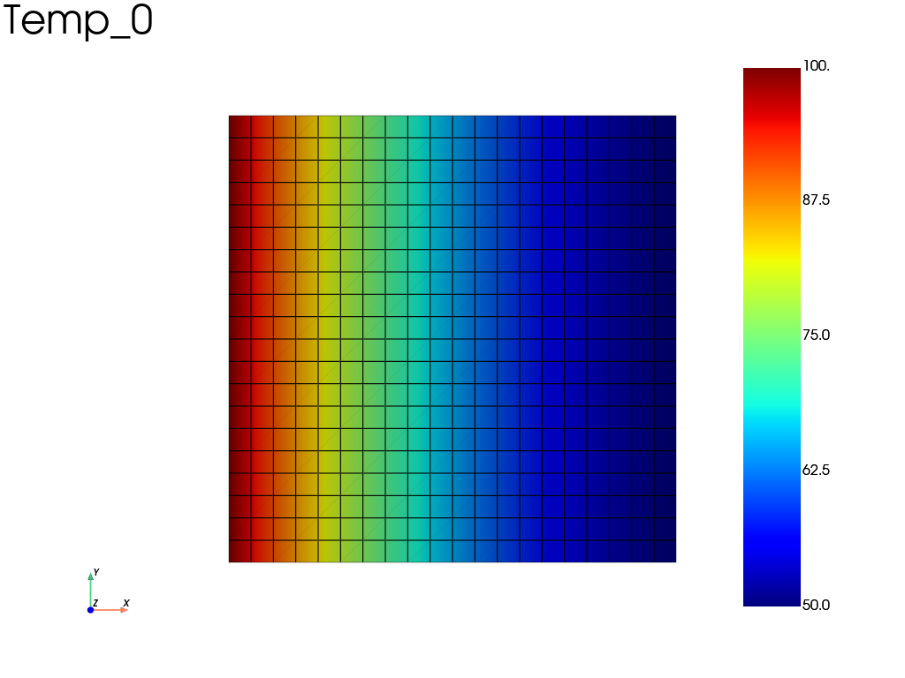

Note
Go to the end to download the full example code.
Transient heat conduction in a 2D square
Transient heat conduction in a unit square with fedoo.weakform.HeatEquation
and fedoo.constitutivelaw.ThermalProperties, solved on a
fedoo.problem.NonLinear problem with a first-order backward Euler time
integrator. The temperatures of the left and right edges are ramped from 0 to
\(T = 100\) and \(T = 50\); the other edges are insulated.
import os
import fedoo as fd
Mesh and thermal law
Units: W, m, kg, s, K. The values are illustrative: the conductivity is the one of a steel, but the specific heat is about 1000 times smaller than that of steel, which shortens the diffusion time to a few tens of seconds.
fd.ModelingSpace("2Dplane")
L = 1
meshname = "Domain"
fd.mesh.rectangle_mesh(
nx=21, ny=21, x_min=0, x_max=L, y_min=0, y_max=L, elm_type="quad4", name=meshname
)
mesh = fd.Mesh[meshname]
K = 18 # thermal conductivity, W/(m.K)
c = 0.500 # specific heat, J/(kg.K) (illustrative value)
rho = 7800 # density, kg/m3 (unit thickness in 2Dplane)
material = fd.constitutivelaw.ThermalProperties(K, c, rho, name="ThermalLaw")
wf = fd.weakform.HeatEquation(material)
assemb = fd.Assembly.create(wf, meshname, name="Assembling")
Problem, time integrator and boundary conditions
The "Displacement" criterion is the generic norm of the dof increment; here
it applies to the temperature. The prescribed temperatures start from 0
(start_value=0) and follow the default linear time function, so they
reach their final value only at \(t_{max}\).
left = mesh.find_nodes("X", 0)
right = mesh.find_nodes("X", L)
pb = fd.problem.NonLinear("Assembling")
pb.set_time_integrator(fd.time.FIRST_ORDER, fd.time.BackwardEuler())
pb.set_nr_criterion("Displacement", tol=1e-2, max_subiter=5, err0=100)
if not (os.path.isdir("results")):
os.mkdir("results")
res = pb.add_output(
"results/thermal2D", "Assembling", ["Temp"], output_type="Node", file_format="vtk"
)
tmax = 200
pb.bc.add("Dirichlet", left, "Temp", 100, start_value=0)
pb.bc.add("Dirichlet", right, "Temp", 50, start_value=0)
Dirichlet boundary condition:
var = 'Temp'
n_nodes = 21
value = 50
Solve and plot the final temperature field
With the diffusivity \(\alpha = K / (\rho c) \approx 4.6 \times 10^{-3}\), the slowest transient mode decays with the time constant \(\tau_1 = L^2 / (\pi^2 \alpha) \approx 22\), much shorter than \(t_{max} = 200\): the initial transient has vanished at the end. The final field is nevertheless not yet the linear steady profile, because the boundary temperatures are still rising at \(t_{max}\). For such a ramp the interior lags behind the boundary values by about 10 K at the center (about 13 % of the steady value of 75 K), and the backward Euler scheme with \(\Delta t = 20\) adds a further lag.
pb.nlsolve(dt=tmax / 10, tmax=tmax, update_dt=True)
res.plot("Temp")

Iter 1 - Time: 20.00000 - dt 20.00000 - NR iter: 2 - Err: 0.00158
Iter 2 - Time: 40.00000 - dt 20.00000 - NR iter: 2 - Err: 0.00081
Iter 3 - Time: 60.00000 - dt 20.00000 - NR iter: 2 - Err: 0.00043
Iter 4 - Time: 80.00000 - dt 20.00000 - NR iter: 2 - Err: 0.00022
Iter 5 - Time: 100.00000 - dt 20.00000 - NR iter: 2 - Err: 0.00012
Iter 6 - Time: 120.00000 - dt 20.00000 - NR iter: 2 - Err: 0.00006
Iter 7 - Time: 140.00000 - dt 20.00000 - NR iter: 2 - Err: 0.00003
Iter 8 - Time: 160.00000 - dt 20.00000 - NR iter: 2 - Err: 0.00002
Iter 9 - Time: 180.00000 - dt 20.00000 - NR iter: 2 - Err: 0.00001
Iter 10 - Time: 200.00000 - dt 20.00000 - NR iter: 2 - Err: 0.00000
Total running time of the script: (0 minutes 0.287 seconds)